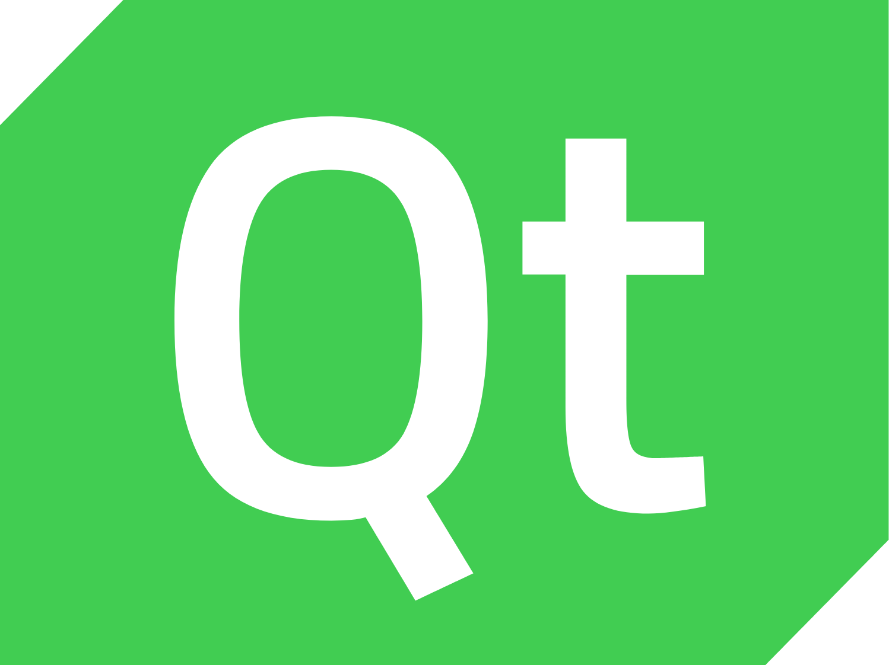
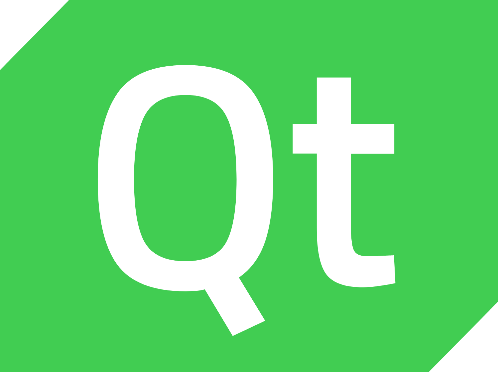

Bonjour,
Je suis Hadjersi Bilal
Actuellement diplômé d’un BTS Systèmes Numériques, option Informatique et Réseaux (SN),
je suis à la recherche d’une alternance à long terme afin de poursuivre mon cursus
en troisième année de Bachelor Développement Fullstack.
À propos de moi
Je m’appelle Bilel Hadjersi, j’ai 20 ans, et je suis passionné par le développement web.
Grâce à mes deux années de formation en BTS Systèmes Numériques,
j’ai acquis de solides connaissances dans ce domaine. Le développement web est un secteur en constante évolution,
ce qui alimente ma curiosité et mon envie d’apprendre en permanence.
Cette dynamique me motive à rester à jour avec les nouvelles technologies et à m’investir pleinement dans cette passion.

Compétences


 


Voici mes projets

Il s'agit d'un projet que j'ai réalisé pour améliorer mes compétences en HTML et CSS. J'ai codé le portfolio d'un 'client' imaginaire,
un photographe professionnel. Toutes les sections sont accessibles via les liens dans l'en-tête.

J'ai codé ce jeu au tour par tour en C++ et MySQL. C'est un jeu qui intègre plusieurs paramètres, tels que la vitesse, l'attaque
et la défense. Il propose des objets boosteurs ainsi que des personnages améliorés.
J'ai codé cet assistant vocal en Python avec MySQL. Cet assistant, grâce à diverses API, peut fournir la météo de n'importe quel pays,
ouvrir ou fermer les volets d'une maison, afficher la température intérieure, ainsi que l'heure et la date.